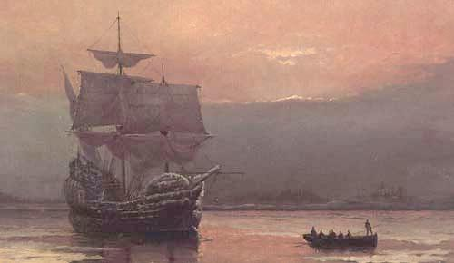
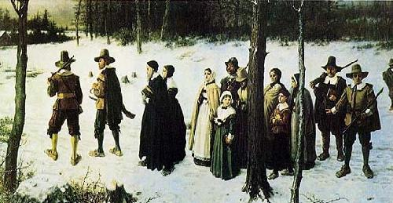

11) Amerika: Tepenin Üzerinde Bir Kent mi?
“Birleşmiş Devletlere vardığımda dikkatimi çeken ilk şey, ülkenin dini yönüydü; ve orada ne kadar uzun kaldıysam, bu durumdan kaynaklanan önemli siyasi sonuçları da o kadar iyi anladım.”
Alexis de Tocqueville
merika kıtası bulunmasaydı–ya da Çinliler farklı bir tarafından keşfederek Colombus’u alt etmiş olsalardı, Batı dünyasının, dolayısıyla Hristiyan aleminin tarihi tamamen farklı olurdu. Fakat bir Avrupalı’nın muazzam, verimli ve nüfusun az olduğu Amerika kıtalarını tesadüfen bulmasıyla, üstünlük konusunda Doğu ve Akdeniz kültürlerinden “Atlantiğin üstünlüğüne” doğru bir geçiş yaşandı. Güney Amerikan altını “Hristiyan” Avrupa’daki ticari dengesizliğinin yerini Doğu ile değiştirdi. Ardından Kıta, Avrupalı ülkelerin erişimine açık olan yeni, büyük doğal kaynaklar sağladı. Bağımsızlık Bildirgesi, Amerikan Devrimi ve Amerikan Anayasası –eski rejimle modern çağ arasındaki geleneksel kırılma noktası olan– Fransız Devriminden on yıllar önce gerçekleşmişti. Böylece Avrupa, yüzyıllarca ileri gitmiş oldu. Çoğu Avrupa ülkesi, benzer demokratik kurumlara 20. yüzyılın ikinci yarısında sahip olmuşlardır. O dönemde buna yalnızca Amerika araç olmuştu. Amerikan halkı, hem geçmişte, hem de günümüzde dünyanın geri kalanına örnek olma konusunda sağlam bir bakış açısına sahip olduklarını düşünür.
Batı’nın, Amerika’nın ön ayak olduğu bu üstünlükten yararlanıp yararlanmayacağı ise tartışma konusudur. Francis Fukuyama gibi düşünürler Amerikan liberal demokrasisini “tarihin sonu” olarak nitelendirirlerken, Oxford’da bir tarihçi olan Felipe Fernandez Armesto “kısa süreli ve her an bozulabilecek bir Batılı üstünlüğünden” bahseder. Bunu da “kusurlu, rizikolu ve kısa ömürlü” olarak nitelendirirken “Doğu’nun kültürel intikamı’nı” dile getirir. Böyle bile olsa, Amerika’nın Batı dünyasının modern demokratik yönetim biçimlerine ve dünya hakimiyetine doğru götürülmesindeki önemi yadsınamaz. İnkar edilemeyen başka bir gerçek ise –pek çok insana göre nahoş olduğu için tercihen unutulagelen bir gerçek– Hristiyanlığın Amerikan toplumunda önemli bir rol oynamış olması, oynamaya da devam etmesidir. Modern dünyanın ortaya çıkması üzerine olan bu bölüme, Amerika ile başlamak yerinde olur.
Yeni Dünya’ya adım atan ilk Hristiyanlar girişken, maceracı kişilerdi. Birkaç yüzyıl öncesinin din uğruna “haçlı seferlerine” çıkan tipleriydi. Azimli, hırslı, idealist, cesur olan bu İspanyol gençleri motive eden, onları vatanlarındaki sapkınlığın zalimleri yapan aynı Katolik din coşkusuydu. Fatihlere eşlik eden papazlar, hayatta kalan Amerika yerlilerinin dinlerini değiştirmek için çok çaba harcadılar.
Atlantik kıyılarında bulunan pek çok Protestan Avrupalı ulus, Papa’nın Atlantiği İspanyol ve Portekiz olarak ayırdığı (tesadüfen Brezilya da ikincisine dahil edilmişti) 1495 Tordesillas Antlaşması’nı sevinç içinde görmezlikten gelen İngilizler, Hollandalılar, İskandinavyalılar ve Fransız Huguenotlardı. Papa’nın oluşturduğu bu sınır, yasa kurallarının askıya alındığı bir sınır haline geldi. Bu bölgede, çoğunluğu koyu Protestan olan Britanyalı deniz korsanlarının üstünlük kazandığı gayri resmi bir savaş durumu vardı. Denizi aşıp Yeni Dünya papalık sisteminden kurtularak bunun yerine Protestanlığı koymanın önceden tayin edilen görevleri olduğunu düşündüler. Aralarından biri olan John Davys, bu durumu şu şekilde ifade etmeyi tercih etti: “Rab’bin bu parıldayan habercileri başkaları değil, yalnızca bizler olmalıyız!” (Johnson 1997:21). Dünyanın sosyal ve dini anlamda iyileştirilmesi için tanrısal bir şekilde atandıklarını kabul eden bu İngiliz görüşünün kaynağı bu döneme bağlanabilir.
Hristiyan maceracılarını işadamları takip etti. Varlıklı kişiler hükümdarlık imtiyazları veya ödenekleri için başvurabilirlerdi. Bu onların sömürge oluşumlarına para yatırmalarına olanak sağlardı. Böylece koloniler –bazı durumlarda kişisel malikaneler– nihayetinde Amerika Birleşik Devletleri’nin temel eyaletlerini oluşturdu. Başlangıçtan beri hem dini, hem de ticari etkenler güçlüydü. Jamestown’da 1607’de, Kuzey Amerika’nın İngilizce konuşan ilk daimi yerleşimini oluşturan Virginia Topluluğu, “Hristiyan dinini müjdeleyip vaftiz etmeyi ve Müjde’nin yayılmasıyla, zavallı ve sefil, ölümü giyinmiş, neredeyse üstesinden gelinemez bir cehalete sahip olan pek çok ruhu İblis’in elinden kurtarmayı” amaçladığını ileri sürdü (Johnson 1997:23). Gelecekle ilgili başka bir ipucu ise Virginia kolonisinin demokratik özerklik biçimlerini kurmaktaki hızıydı, İspanya ve Portekiz kolonileri bundan farklı olarak güneyin ilerlemesini sağladılar.
Jamestown’un kurulmasından 13 yıl sonra, Amerika’ya biçim veren en önemli olaylardan biri gerçekleşti: 11 Aralık 1620’de Mayflower adlı gemi New Plymouth’da demir attı. Virginia Topluluğu’nun dini amaçlarına rağmen, Mayflower’le gelenler bu dünyada daha iyi bir yaşam koşullarını getirmeyi amaçlayan kişilerdi. Mayflower gemisindekilerin bir bölümü (101 kişiden 35’i) aynı dini görüşü paylaşan, dinsel özgürlük arayışıyla Yeni Dünya’ya gelmiş olan Püritenlerdi. Virginia’dakilerden farklı olarak bu hacılar Amerika’ya karışık bireyler olarak gelmediler. Beraberlerinde ailelerini de getirdiler. Kendilerini Mısır köleliğinden kaçan Yahudiler kabul ederek yeni ve tanrısal şekilde olarak onaylanan bir düzen kurmayı amaçladılar.
Kilise tarihi boyunca, kendi kişisel yorumlarına ve İncil öğretilerinin uygulanmasına, resmen onaylanan görüşlerden daha fazla önem veren Hristiyanlar, o dönemdeki görüş-lere yenik düşmek-ten çok, genellikle kaçmayı tercih etti-ler. Aynı görüşte olan bu kişiler, kendi vicdanlarının gerektirdiği şekilde Tanrı’ya tapınmak için devletin sınırlarını aştılar ya da Orta Avrupa dağlarına kaçtılar. İngiltere’deki Vaftizciler, Hollanda’ya, Hollandalı yerli Mennocular Prusya’ya, ve militarist olan bu millet kendilerini askerlik yapmaya zorladığında Prusya’dan da Rusya’ya kaçtılar. Zaman geçtikçe, baskı altında kalan pek çok Vaftizci, Presbiteryen, Mennocu, ve diğer dindaşlar, kendi inançlarını devletin müdahalesi olmadan yaşama umuduyla “hacıları” Amerika’ya kadar izleyeceklerdi.
Mayflower’ın fırtınalı Atlantik’te yaklaşık sekiz hafta süren yolculuğun ardından, gemideki rahatsızlıklardan kaynaklanan münakaşaların üstesinden gelme yollarını görüşmek için önderler, geminin ana kabininde buluştu. Akabinde bütün kırk-bir aile reisinin imzalandığı önemli bir belge oluşturuldu.
Mayflower Sözleşmesi herhangi bir yönetimi oluştur-muyordu ama, esasen anlaşmayı imzalayan kişilerin “sivil bir örgüt çatısı altında bir araya gelmeyi… adil ve eşit kanunları, emirleri ve anayasaları genel çıkarlara uygun olacak şekilde çıkarmayı ve düzenlemeyi” kabul ettikleri toplumsal bir sözleşmeydi. Başka bir deyişle, oluşturmak niyetinde oldukları yönetim, yönetilenlerin rızasına bağlı olacaktı. Amerika’ya ayak basmadan John Carver idare müdürü olarak seçildi.
Plymouth’un ilk yıllarında hacılar (Pilgrims), kanun koyan demokratik bir kitle olan Yüksek Kurul’u (General Court) oluşturdular. Bu kurul 1636’da koloniciler Genel İlkeler’ini ve İnsan Hakları Beyannamesi’nin bir prototipini tasarladılar. Üç yıl sonra, koloni temsili bir yönetim şekline geçti. Sonuçta Massachusetts Bay (Massachusetts Körfez’i) sömürgesi ile birleştiklerinde, dindar hacıların oluşturdukları demokratik kurumlar, Amerika’nın geri kalan politik üstyapısının üzerine kurulacağı bir temel oluşturdu. Hacıların inanç ve siyasi özgürlük arayışı birleşti. Fakat özgürlük arayışları düzenli yasa yöntemi kavramları sayesinde hafiflemiş oldu. Geri alınamayacak haklarla birlikte, hem hakların hem de yasaların uygulandığını görmek için fedakarlık yapmaya hazır olan insanların ortak isteğinden türeyen yasalar vardı. Bu nedenle hacıların inanç özgürlüğüne dair özlemleri, kilise ve devletin birbirlerinden ayrılmaları görüşünü benimsemelerine ve yönetimin gücünün sınırlamalarını saptamalarına neden oldu.
İngiltere’deki olaylar kısa sürede Yeni Dünya’ya büyük bir Püriten göç akımı başlattı. 1633’te İngiliz yönetimi Püritenler’e ciddi anlamda zulüm etmeye başladı, 1642’ye kadar yaklaşık 25,000 kadarı Amerika’ya göç etti. Cromwell’in İngiltere İç Savaşında kazandığı zafer bu akını hafifletti.
Püriten göçmenlerin hac sonrasında gerçekleşen en büyük ve en önemli dalgalarından biri, Massachusetts Körfezi Kolonisi girişimidir. Sömürgenin gelecekteki yöneticisi John Winthrop’un da içinde olduğu on iki varlıklı Puriten, 1629’da topluluğun başına geçti. 1630 ilkbaharına kadar yaklaşık 1000 dindaş üyeliğe kabul edildi. Örgütlenen bu Hristiyanlar, Tanrı’nın gerçeğini yansıtacak ve Reformasyon’u tamamlayacak bir toplum oluşturmayı amaçladılar. Winthrop bir yönetici olarak, “Dünyanın gözlerini üzerimize diktiği, tepedeki bir kent gibi olacağımızı düşünmeliyiz” dedi. Fakat Winthrop, imtiyazın şart koştuğu gibi Genel Kurul’un üç ayda değil, senede bir kez toplanmasını buyuran önemsiz bir diktatör haline geldi. Herkesin, kendi yönetimine karşı sadakat yemini etmesinin kendisiyle aynı fikirde olmayanların sürgüne gönderilmesini, kırbaçlanmalarını ve işkence görmelerini sağladı.
Mayflower Pilgrim Fathers’ın (Amerika’ya göç eden ilk Püritenler) devlet ve kilisenin birbirinden ayrılması gerektiği görüşünü benimsemelerine rağmen (bu görüş onların “Ayrılıkçılar” olarak adlandırılmalarına neden olmuştur) Massachusetts Püritenleri devlet ve kilisenin birlikteliği kavramına bağlı kalmışlardır. 1631 gibi erken bir tarihte, sadece onaylanan kiliselerin üyelerinin Yüksek Kurul’da oy kullanma hakkına sahip olduklarını buyurdular. 1635’e kadar Kurul, kilise işlerini düzenlemeye hakkı olduğunu savundu. Hiçbir kilisenin kurulun onayı dışında kurulmasına izin verilmezdi. Kısacası bu, kurul yaşamın her alanını kontrol ediyordu. Özellikle Vaftizciler ve Kuveykırlar (Quakers) Massachusetts Püritenleri’nin elinde kötü biçimde ızdırap çekmişlerdir. Aralarından bazıları cezalandırılmış, dövülmüş, sürgüne gönderilmiş, hatta idam edilmişlerdi!
Massachusetts Püritenleri’nin Amerikan toplumunun gelişimine olan en büyük katkısı eğitime verdikleri önemdi. Gelişlerinden yalnızca altı yıl sonra “ilmi ilerletmek ve gelecek kuşaklara da aktarmak için, papazlar ölümleri halinde cahil bir papazlık kurumunun kalması korkusuyla” Harvard’ı kurdular. 1647’de Massachusetts ilk genel eğitim kanunu olan “Ole’ Deluder Satan Act’ı” (Aldatıcı Şeytan Kanunu) onayladı. “Aldatıcı Şeytan’ın temel planı, insanın Kutsal Kitap bilgisinden mahrum kalmasını sağlamak olduğu için”, bu tasarı, bütün çocuklar için zorunlu eğitimi şart koşuyordu.
17., 18. ve 19. yüzyıl Amerika’sının güzelliği, bazı şeylerden hoşlanılmadığı durumlarda, gidilebilecek yeterince yerin olmasıydı. Vaftizciler ve Kuveykırlar Massachusetts’de zulüm görüyorlarsa, kendi dünya görüşlerine uygun yerler kısa sürede saptanabilirdi. Diğer iki Püriten, Thomas Hooker (1586?-1647) ve Roger Williams (1603?-1683) Connecticut ve Rhode Island kolonilerini kurdular.

Newton, Massachusetts’de bir kilisenin pastörü olan Thomas Hooker, cemaatiyle birlikte, Connecticut olarak bilinen koloniyi kurmak için yola çıktı. 1639’da, koloni, “Connecticut’ın Temel Maddeleri’ni” kabul ettiğinde, inancına bakmaksızın her “özgür yerleşimciye” oy kullanma hakkı tanımasıyla, Massachusetts’ten farklı bir hale geldi. Connecticut’ın, insanların henüz kendi vicdanlarının gerektirdiği gibi yaşamakta özgür olmadıkları bir “Devlet” kilisesi modelini devam ettirmelerine rağmen, bu ileriye yönelik büyük bir adımdı. Kilise ve devletin birbirinden ayrılması olayını tamamlayan Rhode Island oldu.
Rhode Island’ın kurucusu Püriten papaz Roger Williams, Boston’dakı bir kiliseye pastörlük etmek için 1631’de, İngiltere’deki zulümden kaçtı. Hacılar gibi William da ayrılıkçıydı. Kilise ile devletin birbirinden ayrılmasına dair görüşleri nedeniyle 1635’de Massachusetts’den sürüldü. Bazı cana yakın Kızılderililer ona ve dostlarına yardım ettiğı için, “vicdan azabı çeken insanlar için bir sığınak olmasını” umduğu Providence (Sağlayış) adlandırdıkları bir yere vardılar (Providence daha sonra Rhode Island’ın başkenti oldu).
Williams, kilise ve devlet birleştiğinde ne gerçek bir dinin ne de milli bir barışın olabileceğine inandı. Din ve devlet işleri arasında tam bir ayrılık olması gerektiğini kabul etti. Devletin yetkisinin “vatandaşlarının ruhlarına değil sadece bedenleri ve mallarına hitap edebildiğini”, bu nedenle insanların ruhları veya vicdanları ile ilgili kurallar belirleyemediğini savundu. Oysa kilise “insanları imanlarını ikrar etmeye mecbur kılmamalıdır, çünkü bu, ruhsal silahlarla yapılmalıdır, Hristiyanlar bu şekilde teşvik edilmeli, zorlanmamalıdır.” Rhode Island’da siyasete karışmak gibi bir dini gereklilik olmadığı ve mütemadiyen kilise ve devletin ayrılması savunulduğu için pek çok Vaftizci’ye burası sığınılacak liman haline geldi. Esasen, Vaftizciler Rhode Island’da öyle önemli bir rol oynar hale gelmişlerdi ki, 1789’da George Washington burayı “küçük Vaftizci eyaleti” olarak adlandırmıştı. Bu istikrarlı ve etkili eyalet, bütün kolonilerin en demokratik olanı, Hristiyanlığın hükümetten yardım almadan da ilerleyebilmesinin tamamen mümkün olduğunu gösterdi. Böylece, federal birlik kurulduğunda, ulus için bir model haline geldi. Bu nedenle, hem varlıklı kurucularının dünya görüşlerini yansıtan, anti-bireyci eyaletler (Püriten Massachusetts gibi), hem de herhangi bir ütopik görüş yükleme amacı gütmeden özgürlük arayışındaki ezilen muhalifler tarafından oluşturulan eyaletler (Rhode Island gibi) Amerika ve onun demokratik kurumlarının yapısının şekillendirilmesinde biçimlendirici bir rol oynadı.
İngiltere İç Savaşı sırasında dini hoşgörü Katolik bir koloni olan Maryland’da da denendi. William Claiborne adındakı bir “Katolik karşıtı” kendisinin koloninin yöneticisi olarak atanmasını sağlamayı başardı, Katolik tapınmasını yasakladı. Fakat 1649’da Maryland’ın Hoşgörü Yasa’sı, Hristiyanlığın çeşitli kollarına dini uygulamalar konusunda özgürlük getirdi. Bu hoşgörü, Rhode Island gibi Maryland’a da ekonomik anlamda çok kazanç sağladı. Pek çok aykırı unsuru (Anglikan Kilisesi’ne bağlı olmayan kişiler) özellikle de Kuveykırları kendisine çekti.
Dostlar Cemiyeti olarak da bilinen, hem resmi papazlığı, hem de önceden belirlenmiş tapınma biçimlerini reddeden Amerikan Kuveykırları’nı ele aldığımızda, ilk akla gelen isim, Pennsylvania’nın kurucusu olan William Penn (1644-1718)’dir. İngiltere’de inancı yüzünden hapse atılan ve nüfuzlu arkadaşlara sahip olan Penn, ödenek olarak Kral II. Charles’dan devletin kendisine olan borcuna karşılık 16,000 pountla büyük bir toprak parçası aldı. Penn, “kutsal deneyim” adını verdiği “bir hoşgörü yerleşimi”, Pennsylvania adlı bir eyalet oluşturmaya karar verdi.
Penn’in yaptığı her şey büyük ölçülüydü. “Kardeş Sevgisi” anlamında başkent Philadelphia, büyük bir şehir sistemi üzerine kurulmuştur. İlk kurulduğu dönemden beri taş ve tuğla evleriyle iftihar eder. Pennsylvania’nın verimli toprağı, ticaret sektörü ve idealizmi, pek çok göçmeni, özellikle Kuveykırları, genel anlamda ise pek çok kişiyi kendisine çekmiştir. Pennsylvania’nın refahı ve özgür atmosferi bu şehri kısa süre içinde Amerika’nın kültürel ve ruhsal başkenti haline getirdi. Kuveykırlar’ın dünya merkeziydi. Bununla beraber Amerikan Yeni Vaftizciler’inin ana merkezine de ev sahipliği yaptı. Prespiteryenler, Mennocular, Moravyalılar, Puritenler, Anglikanlar ve Luteranlar da gelişiyordu. Zamanla, ülkenin ilk bağımsız siyah mezhebi olan Afrika Metodist Episkopal Kilisesi’ne bile ev sahipliği yapacaktı. Philadelphia basım sektörünün ilk merkezi, Amerikan Felsefe Cemiyeti’nin kalesi ve Amerikan Bağımsızlık Bildirgesi’nin de doğum yeri olacaktı.
Pennsylvania’daki özgürlük, meşhur Salem Witch Hunts’ın (Salem Cadı Avı), suçlu olduklarını inkâr eden kırk kadınla beş erkeğin ölümüne neden olan Massachusetts’in giderek daha da boğucu bir hal alan atmosferiyle tamamen karşıttı. Massachusetts’te bir adam ağır taşlarla ezilerek öldürülmüş, yaklaşık 150 kişi ise işkence görmüştü. Ancak başkanın karısının da adı ortaya atılınca yetkililerin akılları başlarına geldi; o zaman yakalananlar serbest bırakıldı. Salem olayı, Amerika siyasetinin kendini belirli aralıklarla gösteren tasfiyelerin ilk örneğiydi, diğerleri arasında McCarthyism, Watergate, ve Zippergate sayılabilir.
Zamanla, Massachusetts gibi çok dar bir anlamda doktrinsel olan eyaletlerin bile dinsel anlamda özel olma durumları bozulmaya başladı. Kiliseler bölündü. Zenginlerle fakirler arasında refah ayrılıkları oluştu. Anglikanlar, Kuveykırlar ve Vaftizciler başka yerlerden taşındılar. Sosyal atmosfer teolojiden çok ticaret alanına odaklı hale geldi: “Püritenler ‘Yankilerin’ içine karışıp kayboldu. Bu, en önemli üyesinin adalet, dürüstlük tutkusu ve dünyada yaşamak arzusu arasında daima hızla ilerlemekte olduğu bir yarıştır” (Johnsone 1997:55). Ticaret ve refah, aslen Püritenlerin Amerika’ya getirmiş oldukları ütopyacılığın niteliğini değiştirdi. Ulus, bu dünyada başarılı olma çabasıyla, diğer dünyayı daha da az düşünmeye başladı. Püriten alimlerden olan Cotton Mather “din refahı getirdi ve kız anneyi öldürdü” diyerek yakınmıştır.
Bu arada, ülke göç almaya devam ediyordu. Göçmenlerin her biri kendi katkılarını yaparak dinamiklerini değiştiriyorlardı. Ulster-İskoçlar (Kuzey İrlandalı), İrlandalılar, Almanlar, İsviçreliler ve diğerleri Appalachian Dağları’nın geçitlerinden günümüzde Kentucky adını alan bölgeye, Tennessee ve Kuzey Carolina’ya, bazıları da Güneye göç ediyordu. Bu kişiler, David Bowie, Andrew Jackson, Davy Crocket, John C. Calhoun, Jefferson Davies, Abraham Lincoln ve Stonewall Jackson’ın atalarıydı.
James Oglethorp’ın Georgia’da farklı bir Amerikan ideal toplum yapısı oluşturma çabası, alkol ve kölelik kayalarına çarparak başarısızlıkla sonuçlandıysa da, 1750’lere kadar çeşitli koloniler her alanda hızla ilerliyordu. Nüfusları büyük bir hızla artıyor, refah seviyeleri de yükseliyordu. Güce ve hayal gücüne sahip olanlar için fırsatlar sınırsızdı. Refahın artması hem Massachusetts Püritenleri’nin hem de Pennsylvania Kuveykırları’nın yapısını değiştirdi. Kuveykır ve Puriten ideolojisi 18. yüzyıl rotasında inişe geçti, çökmeye başladı. Onun yerini Büyük Uyanış’ın kapı açtığı Amerikan Protestanlığı aldı.
Amerikan tarihindeki en önemli hareketlerden biri olan Büyük Uyanış Amerika’nın büyük kırsal alanlarını ziyaret eden vaizler, kutsal bir yaşam sürmenin ve kişisel İncil çalışmasının önemini vurgulayan papazlar tarafından başlatılan bir dizi ruhsal uyanış toplantısı olarak başlamış gibi görünmektedir. Bu kişilerden biri, Log College adındaki küçük bir İncil okulunu kuran, İskoç-İrlandalı bir Presbiteryen olan William Tennet’dir (1673-1743). Kuzey Amerika İncil okulunun bu prototipi, ateş ve kükürt vaazlarını, ilahileri içten söylemeyi, Tanrı sözünün ciddi bir şekilde çalışılmasını örgütledi. Zaman içerisinde, bu yerel kırsal hareketlerden biri, Northampton, Massachusetts’deki Congregational (Cemaatçi) kilisenin pastörü olan Jonathan Edwards’a ulaştı.
Püritenlerin torunu ve oğlu olan Edwards, Amerika’nın ilk önemli entelektüeliydi. Amerika’nın çok geçmeden kendisinden çıkaracağı önemli entelektüellerden bazıları gibi, o da pek çok alanda iyi yetişmişti. Fakat Edwards özellikle tanrıbilimci ve müjdeci olarak iz bırakmıştır. Cehennem ve lanetle ilgili herkes kadar etkili vaazlar verebilmesine rağmen (Öfkeli Tanrı’nın Elindeki Günahkârlar en bilinen vaazıdır), Edward’ı cazip kılan, sevgiyi vurgulaması ve Tanrı’yı her iyi şeyi cömertçe veren biri olarak resmetmesidir. Kurtuluş İşinde Yüceltilen Tanrı başlıklı bir vaazında, Tanrı “kendi güzel suretini insanların ruhuna koyduğunda” insanların nasıl hem mutlulukta, hem de kutsallıkta ilerlediklerini vurgular. Sıradan insanların, güzelliği ve sevinci deneyim etmelerini sağlar. Edward, eski Kalvinci/Püriten çifte seçilmişlik doktirinini (yani, Tanrı’nın bazılarını sonsuz ceza için seçtiği gibi, diğerlerini sonsuz yaşam için seçtiği öğretisini) yıkmıştır. Onun öğretisi, toplumun her seviyesine nüfuz ediyordu, bütün insanlara hitap ediyordu. Bu şekilde herkesin Tanrı’nın kendilerine vermiş olduğu harika yeni vatanda, faydalı yaşamlar sürmelerini sağlıyordu. Edward’ın vaazları yayımlandı, okundu, tartışıldı ve aralarında John Wesley ve George Whitefield’ın da bulunduğu diğer müjdeciler tarafından kopyalandı.
Büyük Uyanış’ın en iyi bilinen gezgin müjdecilerinden biri haline gelen ise Whitefield’di. Kendisi aynı zamanda Amerika’nın ilk sosyal figürüydü. İngiltere’de oluşan kilisenin kendisinin müjdesel vaazlarına karşı çıkması nedeniyle dışarıda vaaz vermeye başlayan bu İngiliz Anglikan papazı, Amerika’yı yedi kez dolaştı. Yaklaşık 1800 vaaz verdiği ve yaklaşık 10 milyon insana ulaştığı düşünülür. Kendi döneminde Whitefield’ın Amerika’daki en ünlü insan olmasının bir nedeni de farklı sınıflara farklı insanlara nasıl hitap edeceğini bilmesiydi.
Büyük Uyanış, Amerika için önemli sonuçlar doğuracaktı. Ulusal figürlerin ortaya çıkmasıyla kolonilerin sınırları aşılmış oldu. Çeşitli mezheplerde pek çok yeni kiliselerin ortaya çıkmasına neden oldu. Aralarından bazılarının bilim dünyasının en ileri birimlerinden olacağı Princeton, Brown Üniversitesi, Rutgers Üniversitesi ve Dartmouth gibi pek çok okulun ortaya çıkma nedeni Büyük Uyanış’tır. Ayrıca “devlet kiliselerinin” Büyük Uyanış vaizlerine karşı çıkmaları, Amerikan Birleşik Devletleri’nın kurucuları (Founding Fathers) bağımsızlıkta savunacakları önemli bir prensip olan kilise ve devletin birbirinden ayrılması ile ilgili tartışmayı daha da alevlendirdi. Gerçekte Büyük Uyanış, Amerika’nın Bağımsızlık Savaşı süresince benimsediği ve Anayasa ile İnsan Hakları Bildirgesi’nin oluşturulmasına katkıda bulunan en önemli hakların şekillenmesine neden olmuştur. Bütün bir ulusu bütün insanların eşit olduğu, ve Yaratıcıları tarafından kendilerine, en bilinenlerinin yaşama, hürriyet ve mutluluk arayışı olan geri alınamaz haklar bahşedildiği inancı etrafında topladı.
Büyük Uyanış, Avrupalı benzerlerinden Amerikan kiliselerini oluşturdu. Bütün farklı mezhepler ayırt edici bir Amerikan karakterine sahip oldu: Ateşli müjdecilik, papaların ve litürjinin rollerinin küçümsenmesi, kişisel dini deneyimin önemi, eskatolojik (dünyanın sonu ile ilgili öğretişler) unsurların vurgulanması ve Amerika’nın tanrısal bir kadere sahip olduğu düşüncesi… Farklı mezheplere mensup, kiliseye giden her insan da, Amerika’da sahip oldukları ortak şeylerin Avrupa’daki orijinal ana kiliselerdekilerden daha fazla olduğuna inanıyordu. Bu nedenle, Büyük Uyanış, Amerika’nın kurucularının değer sisteminin oluşmasına katkıda bulunan ilk devrimsel olaydı.
ABD kurucuları genellikle İncilci Hristiyanlar değil, Aydınlanma deistlerinden olmalarına rağmen, yine de kurmakta oldukları ulusun bütün insanların Tanrı’nın önünde eşitliği, dolayısıyla da kanun önünde eşitliği, insanın günahlı kalıtımsal doğası gibi Hristiyan ilkeleri üzerine inşa edildiğinin, ve böylece devletin gücünün ayrı birimlere bölünmesi gerektiğinin farkındalardı. Bu teşebbüs başarılı olacaksa Tanrı’nın bereketine gereksinim olduğunu da biliyorlardı. Benjamin Franklin Anayasal Kongre sırasındaki bir çıkmazda şöyle ifade etmiştir: “Uzun bir hayat sürdüm, ne kadar uzun yaşarsam, şu gerçekle ilgili daha da ikna edici kanıtlar gördüm: Tanrı insanların işlerini yönetir. Ve bir serçe onun bilgisi dışında yere düşemezse, bir imparatorluğun O’nun yardımı olmadan yükselmesi mümkün müdür?”
Bağımsızlık Bildirgesi’ni imzalayanlar (4 Temmuz 1776) yalnızca siyasi değil, aynı zamanda dini bir teşebbüste rol oynadıklarını düşündüler. Püritenler nihayetinde İngiltere’yi dini nedenlerle, “Tepedeki Kenti” kurmak için terk etmişlerdi. Onların çocukları, düzenli bir şekilde kiliseye gidenler, Britanya’yla savaşmak zorunda kalmışlardı. Çünkü doğru veya yanlış, boyun eğmenin hem ahlak dışı hem de Tanrı’nın Amerikan kolonileri için olan tanrısal planına ters olacağını düşünmüşlerdi.
Buna rağmen, Amerikan anayasası dini bir belge olarak hazırlanmamıştı. First Amendment (Birleşik Devletler Anayasası’na ek olarak, özgür ifade hakkını savunan bir kanun) gerçekte bir devlet dinini reddeder ve Kongreyi “bir din oluşumuna uyan veya bunun serbest olarak uygulanmasını yasaklayan bir yasa” çıkarmak için engeller. Anayasa yarım yüzyıl öncesinde hazırlanmış olsaydı (ya da aynı amaçla yarım yüzyıl sonrasında hazırlanmış olsaydı), Püriten (veya sonraki Amerikan Hristiyanlığı) etkisi, şüphesiz Protestanlığı Birleşmiş Devletler’in devlet dini haline getirirdi. Bunun yerine, Fransız Devrimi’nin kendine has özelliği olan zalim bağnazlıktan ve fanatik ateizmden etkilenmeyen aydınlanma adamları buna şekil verdiler. Amerika’nın kurucuları, dini medenileştiren bir güç olarak hoşgörüyle tanınırlardı. Onlar erdemin öğretişsel ayrıntılardan daha önemli olduğunu savundular. Thomas Jefferson gibi aralarından bazıları, dine düşman olmamalarına rağmen ateist olmakla suçlandılar. Fakat Benjamin Franklin’in dine olan ihtiyacı tamamen reddeden Tom Paine’e söylediği gibi, “İnsanlar din olduğu halde kötüye giderken, din olmasaydı nasıl olacaklardı?”
Amerika’nın kurucuları, 20. yüzyılın son çeyreğinde, Hristiyan dininin ifadelerinin Amerikan toplumundan kasıtlıca çıkarılmasına çok şaşıracaklardı. First Amendment’in kabul edilmesinden sonraki gün, Temsilciler Meclisi (House of Representatives) bir günlük dua ve şükür çağrısı yapan bir önerge çıkardı. George Washington’un devrimci Fransa’da olanlarla ilgili söylediği gibi, “Siyasi başarıya götüren bütün niteliklerin ve alışkanlıkların arasında din ve ahlak vazgeçilmez desteklerdir.”
1790’larda başlayan ve İkinci Büyük Uyanış olarak bilinen başka bir ruhsal akım New England’ı yavaşça etkisi altına almaya başladı. Bu akım Metodist gezici vaizler tarafından, Episkopos Francis Asbury’nin (1745-1816) denetiminde yayılmıştır. At ile seyahat eden bu gezgin vaizler yerleşim yerlerine ve köylere muntazaman gidiyor ve “dünyanın günahını kaldıran Tanrı Kuzusu” (yani, İsa Mesih; bkz. Yuhanna 1:30) ile ilgili bildiriyi duyuruyorlardı. Başlattıkları bu uyanış yayıldıkça, kilise üyelerinde artış oldu, halkın ahlak seviyesi yükseldi ve Yale gibi okullardaki İncilci olmayan eğilimler bir süreliğine tersine döndü.
Bu arada, Presbiteryen vaizler, müjdecilik seferberliğini “vahşi batı” sınırına taşıdılar. Onları Metodistler ve Vaftizciler izledi. Bu üç mezhep de çok başarılıydı, Indiana, Ohio, Kentucky ve Tennessee’de uyanışlar oldu. Uzun ve verimli bir ömre sahip olan tipik bir Amerikan yenilik kamp toplantılarıydı. Her yıl, geniş bir alandan gelen insanlar kamp alanlarına, çadırlarını kurarlar, bir ya da iki hafta eski tanıdıklarıyla zaman geçirirler, vaizleri ve uyanışçıları dinlerler, içlerini döker ve ruhsal olarak yenilenirlerdi. Zamanla kamp alanlarında büyük ahşap “buluşma çadırları” kurulmaya başlandı. Bu kamp toplantıları Peter Cartwright ve Charles Finney’ın uyanış toplantılarının veya daha sonra gelen D. L. Moody, Billy Sunday’ın müjdecilik gezilerinin veya 20. yuzyılda Billy Graham’ınkilerin öncelleri niteliğindeydi.
Büyük Uyanışlar yalnızca, yüzlerce Amerikalı’nın “yeniden doğmasını” (yani günahlardan dönüp İsa Mesih’i Rab ve Kurtarıcı olarak benimsemesi) ve bu nedenle pek çok yerel kilisenin güçlenmesini ve ülkenin “Hristiyanlaşmasını” sağlamakla kalmadı, aynı zamanda deniz aşırı müjdeciliğe ilgi uyandırdı. 1810 yılında Adoniram Judson ve Luther Rice gibi kişiler, American Board of Commissions for Foreign Missions’un (Amerikan Dış Misyon Hizmetleri Yönetim Kurulu; Türkiye’de Amerikan Bord olarak bilinir) kurulmasında oldukça etkili olmuşlardır. Judson bizzat Burma’ya gitmiştir. 20. yüzyılın başlarına kadar Amerikan kiliseleri, misyon faaliyetlerine dünyadaki diğer ülkelerden çok daha fazla destek vermekteydi.
Hristiyanlık, Amerikan eğitim sisteminin içine de karıştı. Devlet okulları Kutsal Kitap’a dayanan, mezheplere ayrılmamış bir çeşit Protestanlığı destekliyor, On Emir’i ve Pilgrim’s Progress’i (John Bünyan’un ünlü kıtabı “İmanlının Yolculuğu”) öğretiyor ve Hristiyan ahlakını ve “karakter yapısını” vurguluyordu.
Birleşmiş Devletleri’ni gölgeye düşüren ve neredeyse yok eden şey, Amerika’nın kurucularının kölelik konusuna karşı olan değişken tutumlarıydı. Amerika’nın kurucuları arasında bu konu ile ilgili en geçerli tutumları en iyi Jefferson sergiler: Kendisi bu uygulamadan nefret etti, köleliğin yanlış taraflarını açıkça ifade etti. Köleliğin kaldırılması gerektiğini vaaz etti. Buna rağmen kendi kölelerini de elinde tuttu. Siyah bir cariyesi vardı. Bu “nefret edilen kurumun” sona ermesi için hiçbir şey yapmadı. Pamuk üretimi için gerekli olmasaydı, ülkede din alanında yaşanan çalkantılar, köleliği ortadan kaldırabilirdi.
Aslında pamuk büyük bir bereketti. 18. yüzyılda rağbet görmeye başlayıncaya kadar, pek çok insan, yıkanması zor olan ve dolayısıyla çok pis ve nahoş olan yünlü giysileri ve rahatsız edici deriyi kullanmak zorundaydı. Fakat pamuk, çok daha rahattı; yıkanması da kolaydı. Pamuğa olan ani ve aşırı talep, Arkwright çıkrığı ve buhar makineleriyle güçlendirildiğinde, Britanya’nın sanayi devriminin döner tekeri haline gelen ve ekonomisini hareket ettiren Hargreaves çıkrığı gibi teknolojik yeniliklerin ortaya çıkmasını hızlandırdı. Britanya tekstil sanayisi bu nedenle çoğunluğu Amerika’nın güney eyaletlerinden gelen çok fazla miktarlarda ham pamuk tüketti. Pamuk Amerika’nın en önemli ihraç malı haline geldi; bir süre için gelirinin ana kaynağı idi. Ayrıca “Güneyin” farklı bir kültürel olgu olmasına neden oldu. Asıl olumsuz olan şey, bütün girişimin ustaca kullanıldıklarında sahipleri için servetler yapabilen siyah kölelerin sırtına yüklenmesiydi. 1820’lere kadar kölelik Güney halkının ayrılmaz bir parçasıydı, bu nedenle hem Güneyli siyasiler, hem de kilise önderleri bunun, siyahların kendileri için olumlu bir bereket olduğunu savunuyorlardı.
19. yüzyılın ortalarına kadar Kuzey’deki kamuoyu kölelik aleyhineydi (Uncle Tom’s Cabin [Tom Amcanın Kulübesi] adlı kitap bir bakıma buna teşvik etmişti). Abraham Lincoln köleliğe insani temeller doğrultusunda karşı çıktı. Çünkü ulusa, özellikle de Güneye zarar verdiğini düşündü. Fakat Lincoln’un İç Savaş’taki esas amacı sadece köleliğin kaldırılması değil, aynı zamanda birliğin kendisinin de korunmasıydı. Ancak 1862 yılında birliğin güvende olduğuna emin olunca savaşın amacını kurtuluştan, “Anayasanın ve Amerika’nın Kurucularının günahını yıkamaya” dönüştürdü (Johnson 1997:472). İlk Püriten kolonicilerinden farklı olarak Lincoln, Amerika’yı “seçilmiş bir ulus” olarak görmedi –bu savaş ulusun kusurlarının bariz bir kanıtıydı– bunun yerine, Amerika’yı “Neredeyse seçilmiş bir halk” olarak adlandırdı. İç savaş, ulusu doğruluk ve adalet temelleri üzerine kuracak olan kanlı bir denenmeydi.
Kuzeyin Hristiyanlık için bir zafer olarak nitelendirdiği İç Savaşın ardından Birleşmiş Devletler günümüzde bildiğimiz “muazzam ve üretken, durmadan değişen, çok kültürlü ve çok ırklı, oldukça fazla materyalist ve çok idealist, saldırgan, agresif, girişken, zorlayıcı, ses getiren, sorgulayan, doğru ve iyi olanı yapan, zenginleşme, herkesi mutlu etme kaygısı taşıyan” yapısını oluşturmaya başladı (Johnson 1997:511). Amerikan kültürü olgunlaştı. Toplumun bütün sınıfları maddi, entelektüel ve kültürel düzeylerdeki gelişmeden faydalandı. Amerikan Hristiyan (yani, Anglo Sakson Protestan) Cumhuriyeti bir başarıydı. Protestanlığın zaferi doruk noktasına ulaştı. Önde olan kilise hizmetlileri, Tanrı’nın Amerika’yı, bu zamana kadar kendi misyonunu, yani dünyaya Amerikan standartlarına göre müjdelenmesi görevini gerçekleştirmek için hazırladığını öne sürdüler.
Tehlikeli bir “Hristiyan yurtseverliği” muhafazakâr Amerika’nın kendine has bir özelliği olacak ve 20. yüzyıl Amerikan kültüründe vahim bir “uygun olanın hayatta kalması” görüşünün ortaya çıkmasına yol açacaktı. Diğer yandan, Amerika zaten deniz aşırı ülkelere diğer ülkelerden daha çok müjdeci yolluyordu. Amerika’nın yönlendirdiği Anglo-Sakson etkisinin İncil müjdesinin bütün dünyaya taşınmasında başarılı olacağı umut edilmişti. Amerikalı Metodist John Raleigh Mott 1880’lerde bunu “bir nesilde dünyaya müjdelemek” olarak adlandırmıştı. 19. yüzyıl bütünüyle, Amerika’nın gelişiminde şaşırtıcı bir devir olduğu için, bu ülke önderliğinde Mott’un hedefi neredeyse mümkün görünüyordu…
Düşünün!